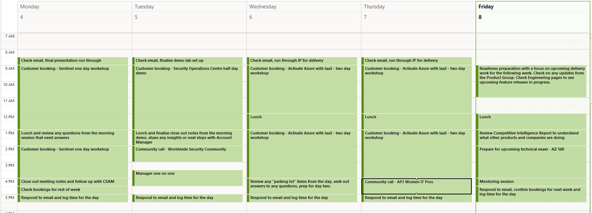

Hannah was born and grew up in Australia and currently lives
on Sydney's Northern Beaches. She graduated high school in
1999, then, after studying film in college, she moved to New
Zealand for five years, where she opened a retail store. After
moving back to Australia in 2007, Hannah ran an online
wholesale and retail business for twelve years before deciding
to pivot her career and is now studying IT at RMIT University.
Currently, she is working as a digital designer and eCommerce
manager for an online retail business. She enjoys spending
weekends with her family and paddle-boarding on the lake after
winning a SUP board in a -fifty words or less- competition.
Hannah believes that it is hard not to become engrossed in IT
when researching fast-paced developments and technologies. Due
to the coronavirus, she was staying at home and decided to
look deeper into the information technology field, quickly
realising that IT is not only ingrained in society but rapidly
changing the way we live and work in all industries. Initially
being drawn to design because of her creative background, she
started to investigate the user experience and user
interaction (UX/UI) fields which excite her. After researching
the impact of digital monitoring technologies on the
Australian populace, she also became very engrossed with the
development and ethics of modern technologies. Hannah has
previous IT experience including relational skills, small
business, strategic planning, as well as design competence.
She is also familiar with the Office Suite, some of the Adobe
design platforms and online communication and sharing tools
like Slack, Microsoft Teams, Gmail, and Dropbox.
Fatima Babar
Fatima is the youngest member on the team. She is an
Australian Pakistani girl who is currently living in Pakistan
with her family and grandparents. Being a dual nationality
holder, Fatima speaks both English and Urdu fluently and has
also learnt the basics of Arabic. She has recently completed
Cambridge A levels and is now aiming to complete a Bachelor of
Arts degree (Majoring in Digital Experience and Interaction
design) within the next 3 years. Fatima's interest in IT
developed with the efforts of her father, a software
developer, who was always convincing her to follow his lead
into becoming a software developer too. However, it wasn't
until her father started a remote job that Fatima started to
take interest in this field. Due to her love for art and
design, she has now decided to become a digital designer and
is studying hard to achieve her goal. Fatima has no prior
experience in the IT field except for learning the basics of
HTML, CSS, and graphic design essential skills from LinkedIn
Learning. Her dream is to become a successful digital designer
and travel the world. In her free time, Fatima enjoys baking
and decorating cakes, doing some DIY decor, and is always
looking forward to the summer holidays season in which she
enjoys travelling with family and cousins.
Nathan Smith
Nathan enjoys photography and mostly shoots film. He shoots
35mm and medium format, with his favourite film being Portra
400. He also enjoys playing games, writing code, and learning
something new. Nathan's interest in IT began as a kid when he
got his first family computer. He was always on it, mostly
playing games at that age. It grew from there when Nathan
became more interested in what his dad was doing as he was an
IT engineer. When he left school, Nathan enrolled in Tafe to
become a network engineer so he could follow in his dad's
footsteps. He has now been working in IT for the last ten
years across four different jobs and has spent the last nine
years on two separate support desks. This has given him
relevant experience in IT and good exposure to different
technologies. Nathan's current job has given him more
experience in software development, which is where he sees his
career going. Nathan brings many skills to the team. Some of
his skills and qualification (apart from being a GitHub
master!) are:
Network Engineering Diploma
DevOps certified
Web Design – beginner
C# - beginner
10 years working in support desk roles
Sarah Carney
Born in Australia, but with a British mother, Sarah has dual
citizenship. She is an inspiring person and someone who
strongly believes in lifelong learning. She has degrees in
Science, Marketing, an MBA, and is now adding IT to the
collection! Her current hobby is known as "abandoned art". The
concept is that atrists create something and leave it
somewhere for someone else to find, ideally bringing some joy
to their day. Sarah has always loved technology but had never
deeply understood IT, the careers it offered or the industry
in general. She had spent a lot of her career working in law
and overseas and on returning to Australia, she took the
opportunity to try out a new industry - telecommunications.
Over time, she moved into a project role, and that was her
first real exposure to what is possible with IT. She learned
about EPICs, features, user stories, and wireframes, an entire
world she had never known existed. Sarah was hooked.
Naturally, when a friend reached out and asked if she would be
interested in joining Microsoft, it was a no brainer, and
there, she has found her home. Sarah has worked in management
roles for several years, across a few different industries. As
a result, she has multiple skills and experiences which
include:
Leading programs of change across diverse and distributed
organisations.
Agile and DevOps methodologies to support the continuous
improvement element of program management.
Building high performing teams as well as developing
performance metrics that support and are aligned to
business strategy.
Developing business strategy, aligned to organisational
vision, as well as building execution plans to support
delivery of that strategy.
Complex stakeholder management, both internal and external.
Creative thinking – finding innovative solutions to complex
problems.
Sarah Taulava (Brinckman)
Sarah is deeply passionate about global development issues
which led her to work in Tonga in 2014, where she met her
now-husband. She lives on a working vineyard in the Coal
River Valley, Tasmania, with her 2-year-old daughter and
1-year-old son and enjoys foraging for sloe berries in late
summer to make sloe gin. Sarah has both Australian and
Tongan nationality and can speak both languages. She
already has a Certificate III in Business (2003), a
Certificate III in Information, Digital Media and
Technology (2020), and is now working towards a bachelor's
degree in IT. Sarah had always been curious about how
computers/networking worked. After recognising the power IT
has when it comes to developing countries and communities,
her determination led her to learn about IT solutions for
microfinance and remittances which further sparked her
interest in the link between development and IT. Despite
not having previous IT experience, Sarah has always had
incredible written and verbal communication skills that
have further improved throughout her 18 years of working in
roles where these skills were used daily with a variety of
stakeholders. She has a genuine interest in constantly
learning and behaves in a way consistent with CleverTech's
culture; being respectful, collaborative, and introspective
by nature.
Online Test Outcomes
Our group is well-balanced when it comes to the members'
personality traits. When working in a team, it is always
beneficial to have people that vary in the way they understand
and do things. One thing that we all have in common is the way
we cope with our emotions and make decisions. According to the
Myers Brigg results, all members rely on feeling rather than
thinking and think for the well-fare of others. Our main
question is: "who does this help?". This is evident within our
individual project ideas from assignment 1. When it comes to
our learning styles, the results also vary. Some members learn
better by reading and writing while others by listening,
speaking, or trying.
This information is definitely very helpful for the group. To
have effective communication with a positive outcome, one must
first understand who they are communicating with, and what
might be the best way to convey a message to them. By viewing
each other's test results, we can better make use of the
skills and traits each member brings with them. We will know
who may be the best one for a particular task and how to help
or give feedback to another member when needed. Not only does
this help other members, but every individual can also realise
their own weaknesses and work to overcome them in ways which
suit them the best. The result: Hopefully a very successful
and happy team!
Ideal Jobs
Team Eagle’s career aspirations vary and correspondingly,
so do the career paths. While some members strive for management
roles such as Chief Information Officer or Research Director of
Engineering and Design, other members are interested in more
technically focused roles such as the path of a developer. Roles
of interest include a Senior Digital Designer, a Mobile Developer,
and a Full Stack Machine Learning Engineer. This variation is not
surprising given the different life and career stages each member
of the team is in.
Shown in the two tables below are the different skills required
and the responsibilities for each of the roles. The tables show
us the cross over in the skills and responsibilities for each of
the roles as well as the standalone skills required.
Table 1.0 - Skills Comparison
Table 1.1 - Responsibilites Comparison
Most of the team plan to complete the Bachelor of Information
Technology degree with RMIT, but that is where our career plans
diverge. Some are looking at internships, during the period of
the degree, to gain experience before exploring a role that will
take them a step closer to their ideal job. Others are looking at
moving directly into their first paying role on their way to
reaching their ideal job. Some of the first jobs being targeted
by the team on completion of the degree are data analyst, UX/UI
designer and web designer.
One member of the team has gone a step further with their career
plan by mapping out a three-year plan. This includes other courses
and programs along with industry certifications. Across the three
years, broadening their technical knowledge and understanding of
industry trends as well as seeking mentoring from someone in their
ideal role.
To conclude, this comparison shows, while most of our group are
aiming to complete the Bachelor of Information Technology degree,
there will be different outcomes and career trajectories. The
collective ideal jobs, whilst having some similar skills and
responsibilities, are all different.
Industry Data
What are the Job Titles for your group's ideal jobs? How do
each of these rank in terms of demand from employers?
Figure 1
1 (Burning Glass Technologies, 2018a)
2 (Burning Glass Technologies, 2018a)
Technical Lead was chosen for Hannah’s Burning Glass Match
because her role would involve leading a large team of technical
experts and was the closest fit. Big Data Engineer was chosen for
Nathan as big data is usually associated with machine learning
algorithms and this was the closest fit. ‘Full Stack Engineer’
did not appropriately capture Nathan’s particular interest in
machine learning and artificial intelligence. While these are
the best fit out of the Titles in the data, in reality, the
roles chosen by Hannah or Nathan do not appear in these lists.
This may indicate an even smaller number of hires in these
roles and they are both roles that would likely appear on this
list rather than a list from another profession.
For this exercise roles were chosen that were more generally
in the direction of interest, so the specificity of these titles
is perhaps not the best data-set for considering the team’s
prospects. As seen in Figure 1, all positions are outside of the
top 25 Titles with Hannah the highest-ranked at 31 and Sarah C at
77 followed by Fatima, Sarah B, and Nathan. The more generalised
‘Top Occupations’ list shows a more positive result and is perhaps
the more relevant when deciding a way forward at this early stage
in the course. Here, if a job was felt to relate to multiple
occupations, both were included. This was to give an idea of the
range of options/directions but the strongest match was graphed
with a solid black line and the minor occupation a dotted line,
See figure 2.1. But again, there was no exact match for
Nathan’s interest in machine learning so the closest related
occupations were used.
All data sets have been colour coded as follows to provide a
quick visual representation of the interest in each role/skill
and an overall feeling for the combination of skills:
Figure 2 Figure 3
(Burning Glass Technologies, 2018b)
Skills Analysis
While this data provides useful insight into what
may be a fruitful addition to a curriculum vitae it
should be viewed more as a general guide to consider
which skills an individual has overall and where they
might be missing some opportunities. It would be
useful for job seekers to incorporate some of these
terms/skills, particularly generic skills, which they
may possess but may not have thought to actively include
in previous job applications.
Some highly ranked skills are more complimentary for many
jobs but would rarely be the primary skill to determine
eligibility, like communication skills. Some terms may
be interchangeable to recruiters like ‘self-motivation’
and ‘self-starter’ so it is difficult to ensure complete
coverage. It is also worth pointing out that some of the
skills likely to determine job eligibility are not directly
matched those of the Burning Glass data, nor would some
implied skills be explicitly listed to feed into the Burning
Glass text analysis algorithms. For example, Hannah’s job
makes no mention of specific technologies, but would it be
possible to lead an Innovative Engineering and Design team
without a solid technical understanding? Perhaps, but
unlikely. However, Burning Glass’ data has proven quite
accurate/useful, and inclusive overall.
How do the general skills in your required skill set rank in
terms of demand from employers?
Generic skills identified were matched with their closest terms
in the Burning Glass Generic Dataset (Burning Glass Technologies
2018d), however, some terms were only found in either the IT
Skills dataset or the Data_Software & Programming dataset
(Burning Glass Technologies 2018d) which were more generic–
they are denoted by an asterisk (*). Each list has been colour
coded by quintile so comparing across datasets for a general
idea about the popularity of these particular skills is still
useful even when the datasets vary in size.
Figure 4 Figure 5 Figure 6 Figure 7 Figure 8
Summary of Generic Skills demand for each team member
Figure 9
How do the IT skills in your required skill set rank in
terms of demand from employers?
Figure 10 Figure 11 Figure 12 Figure 13 Figure 14
Summary of IT Skills Demand for Each Team Member
Figure 15
What are the three highest-ranked IT-specific skills which are
not in your required skill set (Burning Glass Technologies, 2018c)?
SQL is the 1st ranked IT skill that was not included
in the skillset
Microsoft Windows is the 4th ranked skill which was not
included in the skillset.
Project Management is the 5th ranked skill not included
in the skillset. This would form part of these roles but was
included in the generic skillset.
What are the three highest-ranked general skills which are
not in your required skill set? (Burning Glass Technologies,
2018d)
Problem-solving is the 2nd ranked Generic skill that
was not included in the skillset, however, it would certainly
be a part of all of these positions but was just not
articulated in the advertisements. Strategic planning would
involve problem-solving as well as change management and
project planning and development.
Troubleshooting is the 6th ranked generic skill that
was not included in the skillset, however, it is similar to
problem-solving, and elements of troubleshooting would likely
be a part of all these roles.
Quality Assurance and Control is the 14th ranked skill
that was not included in the skillset. Again, there would be
elements of this in these roles but it was not highlighted in
the job advertisements.
Having looked at the Burning Glass data, has your opinion of
your ideal job changed? Why or why not?
Hannah is open to the development of career goals over time.
Making sure to broaden the focus of skillsets acquired will
boost hireablility. Fluidity in thinking will maintain a
relevant outlook. Though the initial aim was Design Director,
the data shows the broader term of Technical Lead to be a
more available position. Keeping an eye on the requirements
for new job roles within IT will direct study paths and
ensure the current practice is forefront in learning.
Networking amongst like-minded peers will open channels to
job roles. Some of the profile tools used to develop these
connections and showcase skills are Slack groups, Linked In,
Twitter, and Blogs. Hannah is following mentor careers and
panels in the hope of emulating them.
Nathan’s passionate interest in machine learning and
particularly artificial intelligence (AI) has not been
dampened by this analysis. Demand for machine learning in a
variety of industries is growing rapidly and, considering that
these figures are from 2018, it would not be surprising to
see demand for these skills already higher and growing
substantially over the short to medium-term. Many of the
skills which build the foundation for machine learning
projects are already in high demand, so working towards an
ultimate career in AI by gaining expertise in big data, data
engineering, programming with git and python would be a
practical choice with many opportunities along the way.
Fatima’s opinion of her ideal job has not changed. She realises
that some of the skill set required for her ideal job as not
very much in demand. This is a major reason why Fatima chose to
complete 12 of RMIT’s subjects (from the Bachelor of IT degree)
alongside her actual goal of completing a Bachelor of Arts in
UX/UI design. She plans to choose these 12 subjects carefully,
keeping in mind the most in-demand skills in the IT industry.
Fatima expects that with the completion of these subjects, she
will have gained a variety of good IT and Generic skills related
to software development that will be of help if, and when she
decides to change careers.
Sarah B has concluded that it would be sensible to broaden
the direction of an ideal job to focus more on software
development and web development rather than specifically mobile
application development. Remote opportunities are more readily
available in programming/software and including these skills
would increase the likelihood of better roles in the future.
This is also a skillset well utilised in the international
development space. It would still appropriate to pursue an
internship or job opportunity with a company like Ionata
Digital, per her learning plan, as they work on a broader range
of products with an application development portion too. This
data makes it clear that communication skills are important to
employers across most jobs and it would be advantageous to
actively develop these further.
Sarah C can see that there are limited opportunities in her
chosen career path, but this is not surprising as not all
organisations will have a CIO. If they do have a CIO, there is
usually only one of those roles available within an organisation
which aligns with why most of the skillsets for the role are
also not as common. As the job descriptions for the CIO role do
not consistently list specific technical skills, this will
likely be the most challenging area for Sarah to focus on. The
majority of the skills listed are generic skills, which also
make differentiation in the marketplace hard. This is a
long-term goal and will require consistent focus, as well as
continuing to revisit job descriptions to make sure her
development plan remains relevant and targeted.
IT Work
Jess Dodson - Customer Engineer (Microsoft)
The job
Jess is in her second year of working for Microsoft as a
Customer Engineer. Having previously worked as a System
Administrator, Jess has expertise in the area of security,
which is what she now predominantly specialises in. The main
focus of her current role is to support her customers in their
use, understanding and application of their Microsoft
technology investments. For Jess, this means the majority of
her time is spent with customers teaching, sharing,
demonstrating and troubleshooting.
With a background in government and higher education, these
tend to be the industries and customers she supports in her
work for Microsoft. Within these industries she observed that
"IT is seen as a cost sink" and that IT teams are always
trying to find ways of doing more with less and operating with
very lean teams. Throughout COVID Jess has seen a huge shift
in focus in these industries towards security. With the
increase in remote working and BYOD trends, identity,
authentication and end to end security conversations are her
core focus.
The activities
A typical day for a Customer Engineer depends on whether they
are scheduled to be with a customer or not. On a customer
facing day, typical activities include triaging email, seeing
what has come in overnight, preparing for the customer
presentation and checking any demo environments. It isn't
unusual for Jess to spend 6 - 10 hours on any given day in
Teams voice or video chats with customers - whether that is
teaching them something new, doing a demo, running an
assessment on existing deployments and infrastructure or
helping lead them through building something new in a lab or
their own environment. On average, Jess estimates she spends
75% - 80% of her time working directly with customers. She
considers herself to be a technical translator. To be
successful in her role, she needs to find ways of explaining
sometimes complex technical jargon and concepts in simple,
easy to consume ways. Her audiences can be anyone from the
helpdesk team to the CEO, which requires an aptitude for
understanding the audience and delivering a message they can
relate to or understand.
On days without customers, Jess focuses her time on technical
training and upskilling. Keeping current with the technology
she is delivering is critical. She is the face of Microsoft
into that customer and is often expected to know a lot about a
broad range of subjects. Jess actively sets aside time to make
sure she is up to date on product changes, proposed features,
as well as understanding what competitors are doing with their
products.
Jess regularly contributes to podcasts, interviews,
conferences and other speaking engagements. She is a sought
after presenter and dedicates additional time to building her
content for these sessions.
A typical week for Jess could look something like this:

Jess faces two main challenges in her role:
Interaction. Currently Jess is required to deliver all her
work remotely. Hosting deeply technical calls with up to 25
people at a time, who are also all working remotely,
creates a real challenge in building a rapport, creating
personal engagement and driving interaction. For sessions
that can span multiple days, this is a real challenge when
trying to help customers get the most out of their
experience, at the same time as gauging whether the
material is pitched at the right level and people are all
following what is happening.
Articulating the why. The second challenge Jess faces is
articulating why customers should do what it is she is
recommending they do. With a lot of the assessments that
Jess does, there are usually recommendations or changes
that need to be made, some of which will have a financial
impact for an organisation. Jess must find ways of
delivering her reports or findings in a compelling manner
that enables the customer to take those recommendations
forward and sell them to their own internal stakeholders.
Jess's most valuable technical skills at the moment relate to
security. She has skills across Azure IaaS which she leverages
on a weekly basis, but it is security tools and Azure Sentinel
and conversations about Security Incident and Event Management
(SIEM) specifically that are in the highest demand.
When taking on the Customer Engineer role, Jess was surprised
to find that Executive Presence was a skill she needed on an
almost daily basis. Often, she isn't talking to just other
technical professionals, but to business owners, investors and
C-level executives. This requires her to be compelling and
able to demonstrate great presence.
The interactions
When working with customers, the following are the kinds of
roles Jess finds herself interacting with:
Security analysts
System admins
Infrastructure engineers
Network engineers
CIO
CISO
CEO
These interactions can vary across information gathering,
delivering technical training, providing a demonstration, or
presenting the outcome of an assessment. Given the broad range
of work that Jess delivers, it is unsurprising that she
interacts with such a broad range of roles whilst working with
customers.
At Microsoft, Jess has a second set of internal stakeholders
that she interacts with each week. These include:
Account Managers - as they "own" the customer relationships
and can share key information about the customer itself
such as internal structures, who the main stakeholders are,
and any current work being done with the customer.
Cloud Solution Architects - who might also be working with
the same customer and delivering POC engagements or other
related technical activities.
Account Technology Strategists - work with customers to
support the development of their ongoing digital strategy,
including demonstrating new technology as it is released.
Jess needs to know what is being shared or shown to the
customer, so her presentations are aligned.
Account Executive - the Account Executive owns the sales
strategy for a particular customer and Jess will work with
them to understand what is currently planned or can share
any insights she gains from the work she does for them.
Her manager - Jess has a manager who supports a group of
Customer Engineers and is there to assist Jess with any
challenges she is facing, help her build and execute on her
personal development plan and provide coaching to help her
growth.
The final, and perhaps most significant group of people that
Jess interacts with internally are other Customer Engineers.
Through Teams channels and distribution lists she and her
fellow Customer Engineers form a strong support network. As a
group they are able to share ideas, updates on product
changes, but perhaps most importantly, they provide a valuable
source of information to each other. No one person could
possibly know the depth and breadth of all products developed
by Microsoft, but the team of engineers are able to support
each other and find the answers quickly to almost any customer
challenge. Jess has actively cultivated her network to help
her be more able to support her customers when they have
questions she doesn't have an immediate answer to.
In closing
When asked about an example of the work she does that best
captures the essence of the IT industry, Jess shared an
example of a Government customer she has been working with
over a long period of time. The customer has multitudes of
Microsoft products that were previously unused or
under-utilised. Often in her role, interactions are one off,
or single days. With this customer, Jess has been back four
times now. What has happened over this time is that she has
been able to assist them with increasing and building their
confidence with using their products. She has seen incredible
growth and learning from them as they have moved towards
greater technical maturity as an organisation. Jess feels that
IT is all about learning. The rate of change and innovation is
so high in this industry, you have to keep up or get left
behind, "If you don't like learning, you are going to be in
the wrong job".
IT Technologies
Cloud, Services, Servers
What does it do?
What is the likely impact?
How will this affect you?
Cybersecurity
What does it do?
Cybersecurity is the process of protecting and guarding the
digital world against cybercrimes (Shaukat et al. 2020). Some
of the main categories of cybersecurity include network
security, application security, information security, and
operational security. Cybersecurity is not only crucial for
companies and businesses of great scale, but also for
individual users of the web and other digital services. With
the passage of time, people are relying significantly on
technologies and computers for a myriad of tasks. Mobile
banking is becoming increasingly popular, which leaves more
people at risk of having their financial data hacked (Oreku &
Mtenzi 2016). Information and communication technologies are
used in almost every system including financial and emergency
services (Oreku & Mtenzi 2016). In the present times,
cyberspace has become an essential factor for all fields and
areas and the reliance on the internet has led to increased
risks of malicious threats (Shaukat et al. 2020).
Today, there are multiple practices through which the security
of a digital product or service can be ensured. Some of the
techniques used to prevent cyber attacks include game theory,
rate control, heuristics, signature-based intrusion detection,
autonomous systems, and end-user security controls (Zeadally
et al. 2020). When it comes to the implementation of these
practices, awareness plays a crucial role. Without an
understanding of the importance of cybersecurity and how to
deal with cyberattacks, the consequences are bound to be more
damaging. Currently, encryption and identity checks are the
most commonly used tactics for cybersecurity. Anti-virus
software and firewalls are used to prevent cyberattacks.
Businesses have prioritised cybersecurity challenges (Kaja,
Shaout & Ma 2019). In larger companies, where the stored
information may be critical and require a high level of
protection, cybersecurity professionals and ethical hackers
are hired to identify and secure any surfacing vulnerability
within the system. However, as Skopik, Settanni and Fiedler
(2016, p. 154) state, 'the Internet threat landscape is
fundamentally changing'. The intention and objectives behind
cybercrimes have converted and cyberattacks are now carried
out in highly complex and targeted approaches that deceive the
average security measures (Skopik, Settanni & Fiedler 2016).
New technologies are rapidly being produced, with little
research and production of the security required to defend
these technologies. This leaves undetected gateways for
cybercriminals to enter through, leading to destructive
consequences for the users of the services and in some cases,
to the service owners and providers also (Kaja, Shaout & Ma
2019). As within the physical world, the digital world also
demands security for its users and the information stored
within it. Cybersecurity defence systems must be also using
state-of-art technologies to tackle the latest types of
cyberattacks.
Data and networks are significantly becoming more and more
sophisticated. This is an area where artificial intelligence
(AI) and machine learning (ML) can work better than humans to
provide security in the cyberspace. The use of AI and ML has
resulted in breakthroughs in numerous problems and can
certainly help in solving current and future cybersecurity
issues (Kaja, Shaout & Ma 2019). AI is capable of analysing
and inspecting large amounts of data and has proven to be an
effective technique for identifying false information
(Zeadally et al. 2020). It can also 'adapt to the changing
nature of Internet traffic' (Zeadally et al. 2020, p. 23827)
This is something that would otherwise consume a lot of time.
Machine Learning technologies are a field of Artificial
Intelligence (Shaukat et al. 2020) and are currently being
used in cybersecurity to automate attack detections and
enhance their performance over time (Zeadally et al. 2020). ML
techniques have a crucial part in battling cyberattacks
including intrusion detection system, malware detection,
phishing detection, spam detection, and fraud detection
(Shaukat et al. 2020). However, some ethical issues and
concerns come with the involvement of AI in cybersecurity
(Timmers 2019). Also, the limitation that AI relies on
learning data that is manually processed and inspected opens
the possibility of inaccurate data with regard to
cybersecurity (Kim & Park 2020). Another issue is that
although ML techniques can efficiently maintain cybersecurity
by protecting against attacks, they are also vulnerable to
cyberattacks themselves and choosing the most appropriate ML
method so far is challenging (Shaukat et al. 2020). Also, for
the detection of DoS attacks, real-time detection and decision
making is necessary. It is not yet explored how AI can be used
for this purpose (Zeadally et al. 2020). Cybersecurity
researchers are continuing to explore the use of AI in
cybersecurity (Zeadally et al. 2020). It is likely that within
the next few years, a significant amount of cybersecurity
procedures will be performed with the help of AI and ML.
What is the likely impact?
With the involvement of AI in cybersecurity, the process of
detecting a security problem and fixing it will require
significantly less time. The approach will focus more on
protecting the software or data. This is because prevention is
nearly impossible considering the fact that hackers would be
using the same technologies for performing cyberattacks
(Zeadally et al. 2020). Companies will no longer need to hire
ethical hackers as this job would be carried out by AI. As
Braganza et al. (2020, p. 1) declare, 'Artificial intelligence
(AI) is challenging the foundations of businesses and changing
the ways people work globally'. Although AI will replace
humans in cybersecurity process where mechanical and
analytical intelligence is required, its potential is limited
when it comes to areas that require intuitive and empathetic
intelligence (Braganza et al. 2020). Consequently, the
involvement of AI will not affect jobs but rather the nature
of the work (Braganza et al. 2020). Professionals would still
need to monitor the AI and ML technologies to ensure their
efficiency and protection. Although this development will
eventually replace some current cybersecurity jobs and
technologies, it will bring along new job opportunities such
as AI and ML experts who are familiar with handling the
AI-driven cybersecurity systems. Some of the current
technologies may be used in conjunction with the AI and ML
techniques to provide effective security systems.
How will this affect you?
With real-time detection and protection, the risks of users
becoming victims of ransomware will also reduce. Individual
home PC users would be safer from cyberattacks with the help
of smarter, AI-driven intrusion detection systems. People will
not have to do too much to ensure that their information is
protected in the cyberspace as the system will be doing it for
them. The chances of human error and slips will be
significantly reduced. However, users would still need to go
through particular procedures to ensure their security systems
are working properly. People who use social media or any other
app or service that may store any sort of personal information
can feel more secure and assured that their data is safe from
hackers. A drawback that may be faced is that people might
gain a 'false sense of security' and trust the AI system and
its decisions without actually knowing how the decision has
been reached (Timmers 2019). It is unrealistic to say that one
will be 100% secure, or that cybersecurity will be
unbreakable. Regardless, as use of the internet increases
within society, the ethical security culture would eventually
turn into a norm which will assist in tackling cybercrimes
(Oreku & Mtenzi 2016).
Machine Learning
What does it do?
In 1956, machine learning pioneer Arthur Samuel succeeded at
programming a computer to teach itself to surpass his ability
at playing checkers. (McCarthy, n.d.) He coined the term
‘machine learning’ and defined it as a “field of study that
gives computers the ability to learn without being explicitly
programmed”. (Ng, 2020).
Computers process large quantities of data accurately and
quickly. If tasks can be reduced to their fundamental data and
logical arguments, then computers can perform these tasks much
better than any human. The outcome of performing these tasks
can form another data-point, enabling the computer to ‘learn’
to perform the task better next time. A computer can also find
relationships in the variables not detectable by humans to
‘learn’ the likely results of a new set of variables. The
reality of machine learning though is “…nothing comes out [of
a computer] which has not been put in…”(Samuel, 1960).
There are three main types of machine learning algorithms in
use (Padala et al., 2019):
Supervised learning algorithms rely on defined data labels.
The machine can look for patterns so that, given a new input,
it could predict the likely output.
Example: The programmer might input large quantities of
labeled images of handwritten lettering, the computer would
process all these images and ‘learn’ to read some previously
unseen handwriting. Computers do now outperform humans in
handwriting analysis. (Esposito, 2017).
Unsupervised learning algorithms look for patterns in data
where there are no labels. (Ng, 2020, Esposito, 2017) Given
a large dataset, the computer may start to identify
particular outcomes that correlate with particular inputs.
Here the algorithm identifies meaningful limits based on
probability factors around clustered data-points.
Example: This has been used in looking at the etiology of
certain diseases, for example. The algorithm is fed large
amounts of health data and may be able to meaningfully group
them by particular traits to give clues to factors affecting
the disease state. (Ng, 2020)
The third type of machine learning approach is
reinforcement learning. Here the algorithm is provided with
feedback based on its activity. This model draws on operant
conditioning in behavioural psychology. (Dayan, 2002)
Example: Arthur Samuel’s checkers playing computer would
play countless games against itself, recording when chosen
moves resulted in a rewarding outcome to refine its playing
strategy.
What is the state of the art of this new technology?
Roughly 90 percent of the world’s total data is thought to
have been generated in the past 2 years alone. (Bulao, 2020)
For computers, this is data like any other, patterns can be
found if the computing power allows. The increasing size and
variety of data sets available allow for more complex,
multi-layer pattern identification known as deep neural
networks. With further increasing computing power and
different approaches even more can be understood drawing
from this data; Quantum computing is that next frontier.
Quantum mechanics is a separate branch of physics dealing
with phenomena at an atomic level. (Adams, 2019) Quantum
computers can process information much more quickly and
handle calculations that overwhelm even the most powerful
super-computer currently. Gideon Lichfield (2020) describes
the difference between a traditional bit and a quantum bit
(qubit) as follows:
“If information were color, then a classical bit could be
either black or white. A qubit when it’s in superposition
could be any color on the spectrum, and could also vary in
brightness.” (Lichfield, 2020)
This opens possibilities for breakthroughs in anything
that can be represented in data, which is theoretically
everything.
What can be done now?
Deep neural networks are unlocking understanding previously
out of reach with more complex algorithms utilising the huge
quantities of data now available and substantial developments
in computing power.
While there is significant commercial interest in quantum
computing the delicate nature of qubits and rapid decoherence
when in superposition is currently proving challenging.
Already D-Wave’s quantum computers are being deployed in
companies such as Volkswagen to learn to streamline processes,
though this is not a pure quantum computer (Kahn, 2020).
In 2019, Google claimed to solve a problem that would have
taken Summit 10 000 years. This, however, is disputed by IBM
(Lichfield, 2020). There is a race to develop a more stable
and powerful quantum computer, but each player has a different
end goal in mind.
What is likely to be able to be done soon (say in the next
3 years)?
IBM has promised a 1000-qubit quantum computer by 2023 with
a ‘stepping stone’ machine of 127-qubits this year.
(Cho, 2020) Google has a plan towards a million-qubit quantum
computer in the next 10 years. (Cho, 2020) Some estimate that
it would take a 20 million qubit computer to crack 2048-bit
encryption and that may be 10-20 years away.
(Bushwick, 2019) With each increase in speed and stability,
more insight into data is gained and the possibilities grow.
What technological or other developments make this
possible?
Finding ways to stabilise superposition and the incredibly
environmentally sensitive qubits will allow the building of
bigger and better quantum computers.
What is the likely impact?
What is the potential impact of this development?
With deep learning and the sheer volume of data generated
every day, there is an opportunity to understand the world,
how it works, and human behaviour better than ever before.
However, with rapidly improving technology comes significant
privacy and ethical issues and changes here are not able to
keep pace.
Already machine learning facial recognition algorithms are
being used for racial profiling in the control of China’s
minority Uighur population, for example, (Mozur, 2019) and
have obvious international security implications. With the
rapid advancement of these technologies and the slow pace of
government legislation, potential issues are wide open. Even
news, search, and Facebook feed algorithms can dramatically
shape people’s world view, limiting exposure to the real
breadth of news/media. Most of these algorithms that shape
world views are trade secrets, society can only guess at how
it is being manipulated.
What is likely to change?
Machine Learning is possibly the most significant disruptive
technology of this century – coupled with quantum computing,
it will likely change the way the how we understand the
Universe and humanity’s place in it as well as how people
interact in all spheres. These changes, however, are not
only from intended advancements. The improvements in quantum
machine learning also directly threaten public-key
cryptography, underpinning much of the internet and modern
commerce. Researchers are looking forward to the quantum-led
collapse of 2048-bit encryption, already exploring other
approaches to keep data safe. (Bushwick, 2019)
Which people will be most affected and how?
If public-key cryptography is cracked without a suitable
replacement, the world’s data would be left exposed. It would
not just be those who shop online or use social media as
even the relatively ‘off-grid’ individuals likely have
housing titles, licenses, tax records, medical records. No
person in a connected society would be unaffected.
Will this create, replace, or make redundant any current
jobs or technologies?
Most manufacturing robots are already driven by Machine
Learning. Chatbots will reduce customer service roles/tech
support roles, couriers are likely to be replaced by
autonomous vehicles, market analysts, and even financial
advisors. There are elements of most jobs that will be
affected. On the other side of this though is an explosion
in machine learning roles, implementing these technologies
in businesses and homes around the world.
How will this affect you?
In your daily life, how will this affect you?
Machine learning is pervasive in 2021. Most people are
influenced by machine learning algorithms daily or likely even
hundreds of times in any given day. Google searches,
personalised social media feeds, news feeds, Netflix
recommendations, automated vehicles, chatterbots, dynamic
pricing, targeted marketing, new medications indicated by an
algorithm; the list is long and getting longer by the day.
What will be different for you?
Particularly topical in the time of COVID, is whether some of
the deep learning models can help to alleviate future global
disaster. Epidemiological models can point to potential
pandemic outbreak risks (Sun, 2020), models can analyse
bushfire behaviour, or better find patterns in cyclone
behaviour. Similarly, deep learning models and quantum machine
learning could help unlock possibilities for addressing climate
change and other questions of global significance. The
challenge will be noticing how the individual is affected. It
will be unclear what has influenced a world view, a purchasing
decision, a new medicine a doctor prescribes yet all of these
things will be subject to the influence of machine learning.
On a smaller scale, perhaps this century automated vehicles
may become mainstream, most homes will interact with a
chatterbot regularly, billboards will scan your face to
target their advertising, diseases may be cured.
How might this affect members of your family or your
friends?
It is a frightening thought that children of today will grow up
consuming most of their news from online sources curated through
machine learning algorithms. One can never know the people they
might have grown to be without this influence.